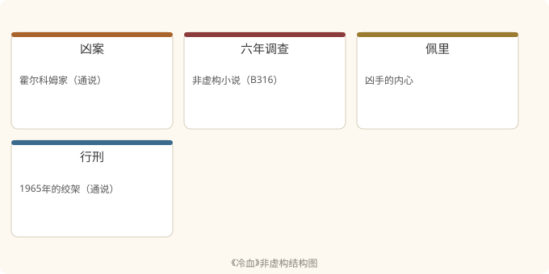

冷血
一、基本信息
| 作者 | 杜鲁门·卡波特 |
|---|---|
| 成书/出版 | 1965年（Britannica B332：In Cold Blood (1965)——1965年《纽约客》连载并成书；1966年1月单行本说通说待核） Truman Capote — Encyclopaedia Britannica（百科全书） |
| 国别/地区 | 美国 |
| 时代 | 现当代 · 20世纪 |
| 体裁 | 非虚构小说 |
| 语言 | 英语 |

《冷血》非虚构结构图（主题·结构图）
二、创作背景
作者页（B332）：'nonfiction novel'（非虚构小说）的先驱之一，In Cold Blood (1965) 写堪萨斯克拉特一家四口被杀案（B332 作者页定位）。
作者（B332）：Other Voices, Other Rooms (1948) 处女作；《蒂凡尼的早餐》(1958)（B332）。
三、内容脉络
1959年堪萨斯霍尔科姆家四口被杀案——凶手佩里与迪克（通说待核）。
'非虚构小说'：六年调查与行刑（通说待核）。
四、主要人物表
| 人物 | 身份 | 说明 |
|---|---|---|
| 佩里·史密斯 | 凶手 | （通说待核） |
| 迪克·希科克 | 凶手 | （通说待核） |
五、主题与艺术特点
- '非虚构小说'的诞生（B332：nonfiction novel）。
- 犯罪与叙事（通说待核）。
- 美国中西部（通说待核）。
六、影响与评论
- 作者页：'nonfiction novel'开创者之一（B332 作者页口径）。
Truman Capote — Encyclopaedia Britannica（百科全书） - 作者页：卡波特1966年 In Cold Blood（B332 作者级定位）。
Truman Capote — Encyclopaedia Britannica（百科全书）
七、阅读建议
难点
- 非虚构与虚构的边界。
- 真实犯罪语境。
- 《冷血》（人民文学出版社/南海出版公司版本，通说待核）。
- 英文原版。
非虚构小说首选。
八、待核实
- 1965年成书（Britannica B332 口径；1966年1月单行本说待核）（Random House说）核对。
- 佩里·史密斯/迪克·希科克/霍尔科姆家人名核对。
- 'nonfiction novel'术语首用者争议待核。
- 1966年1月单行本出版说（Random House）核对——Britannica B332 口径为1965年。